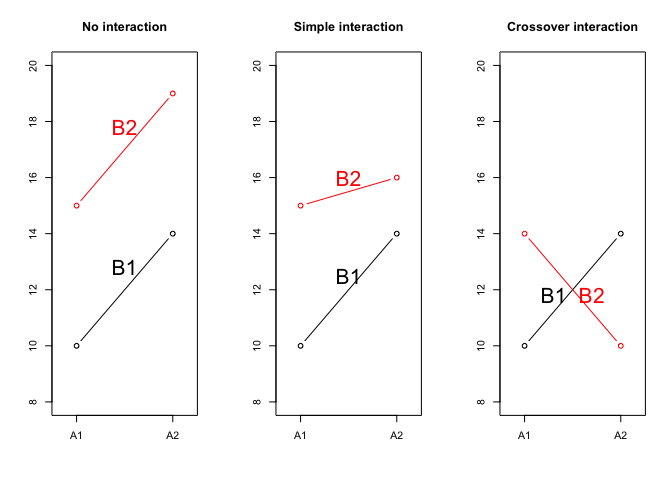
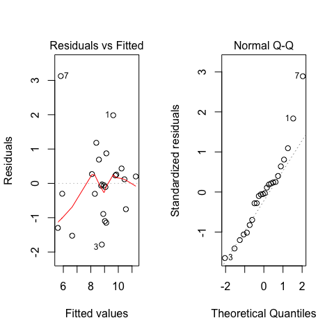

Capitolo 11 Analisi della varianza (ANOVA) a due vie
11.1 Il concetto di ’interazione’
In alcuni casi potremmo essere interessati ad organizzare un esperimento per valutare l’effetto di due fattori sperimentali combinati (ad esempio la lavorazione del terreno ed il diserbo chimico), in modo da mettere in evidenza possibili “interazioni”. Con questo termine intendiamo il fenomeno per cui l’effetto di un fattore (ad es. la lavorazione) cambia a seconda del livello dell’altro fattore (il diserbo chimico). Ad esempio, nella tabella seguente, A2 da un risultato più elevato di A1, quando il secondo fattore sperimentale è B1, mentre la graduatoria è invertita con B2.
| B1 | B2 | Media | |
|---|---|---|---|
| A1 | 10 | 17.0 | 13.50 |
| A2 | 14 | 6.0 | 10.00 |
| Media | 12 | 11.5 | 11.75 |
In termini algebrici, l’interazione può essere calcolata come mancanza di additività. Se guardiamo la tabella sovrastante, osserviamo che il trattamento A1 ha incrementato il risultato di 1.75 unità rispetto alla media generale, mentre il trattamento B1 ha incrementato il risultato di 0.25 unità, sempre rispetto alla media generale. Di conseguenza, per la combinazione A1B1 ci aspetteremmo un risultato finale additivo, pari a 11.75 + 1.75 + 0.25 = 13.75, mentre il risultato finale è di 10 unità. Evidentemente la combinazione A1B1 è una combinazione svantaggiosa, cioè i due trattamenti interagiscono tra di loro in modo negativo portando ad un risultato inferiore alle attese.
11.2 Tipi di interazione
In genere, abbiamo due tipi di interazione: quella in cui cambia la graduatoria tra i trattamenti (interazione crossover) e quella in cui vi è solo una modifica dell’entità dell’effetto (interazione semplice o non-crossover). I due tipi di interazione sono esemplificati nel grafico sottostante.

L’entità e il tipo di interazione tra fattori sperimentali possono essere studiati solo con esperimenti combinati a più fattori (esperimenti fattoriali) e mai con esperimenti singoli.
11.3 Descrizione del caso studio
Un ricercatore ha organizzato un esperimento fattoriale a blocchi randomizzati, dove ha valutato l’effetto di tre tipi di lavorazione del terreno (lavorazione minima = MIN; aratura superficiale = SUP; aratura profonda = PROF) e di due tipi di diserbo chimico (a pieno campo = TOT; localizzato sulla fila della coltura = PARZ). L’ipotesi scientifica è che, in caso di diserbo localizzato, il rovesciamento del terreno prodotto dall’aratura sia fondamentale, in quanto sotterra i semi prodotti dalle piante infestanti, impedendone l’emergenza nella coltura successiva e rendendo quindi necessario il diserbo a tutta superficie. La mappa di campo è esemplificata nel disegno seguente, dove i colori contraddistinguono i quattro blocchi.
In totale, l’esperimento include sei tesi (le sei possibili combinazioni tra i due fattori sperimentali) e quattro repliche per un totale di 24 parcelle. Come consuetudine in pieno campo, l’esperimento è organizzato a blocchi randomizzati e le sei tesi sperimentali sono allocate a caso all’interno di ciascun blocco.
I risultati ottenuti con questo esperimento sono disponibili nel file ‘beet.csv’, che può essere aperto direttamente da gitHub, con il codice sottostante.
dataset <- read.csv("https://raw.githubusercontent.com/OnofriAndreaPG/aomisc/master/data/beet.csv", header=T)
head(dataset)
## Lavorazione Diserbo Blocco Prod
## 1 MIN tot 1 11.614
## 2 MIN tot 2 9.283
## 3 MIN tot 3 7.019
## 4 MIN tot 4 8.015
## 5 MIN parz 1 5.117
## 6 MIN parz 2 4.30611.4 Analisi dei dati
Il modello lineare è:
\[y_{i,j,k} = \mu + \gamma_k + \alpha_i + \beta_j + \alpha\beta_{i,j} + \varepsilon_{i,j,k}\]
dove \(\gamma\) è l’effetto del blocco, \(\alpha\) è l’effetto della lavorazione, \(\beta\) è l’effetto del diserbo, \(\alpha\beta\) è la loro interazione, mentre \(\varepsilon\) è l’errore associato ad ogni osservazione, che si assume normalmente distribuito con media 0 e deviazione standard pari a \(\sigma\).
Per rendere ‘stimabili’ i parametri, poniamo un vincolo sul trattamento, per cui \(\gamma_1 = 0\), \(\alpha_1 = 0\) (primo livello in ordine alfabetico, cioè MIN), \(\beta_1 = 0\) (primo livello in ordine alfabetico, cioè PARZ). Per quanto riguarda l’interazione \(\alpha\beta\), abbiamo 6 combinazioni possibili tra il primo e il secondo fattore (MIN - TOT, MIN - PARZ, SUP - TOT, SUP - PARZ, PROF - TOT, PROF - PARZ); di queste, dobbiamo vincolare tutte le combinazioni che contengono il primo livello in ordine alfabetico per uno dei due fattori (MIN - TOT, MIN - PARZ, SUP - PARZ, PROF - PARZ, corrispondenti ad \(\alpha\beta_{1,1}\), \(\alpha\beta_{1,2}\), \(\alpha\beta_{2,1}\) ed \(\alpha\beta_{3,1}\) = 0). In questo modo, \(\mu\) è il valore atteso per la parcella localizzata nel primo blocco e trattata con il primo livello in ordine alfabetico per tutti i fattori sperimentali (MIN - PARZ). Dobbiamo stimare un intercetta, tre valori per \(\gamma\), due valori per \(\alpha\), un valore per\(\beta\) e due valori per \(\alpha\beta\), per un totale di nove parametri.
11.5 Stima dei parametri
Trattandosi di un modello lineare con errori gaussiani, la stima dei parametri può essere effettuata con il metodo dei minimi quadrati, cioè cercando i valori dei parametri che rendano minima la somma dei quadrati dei residui. In R, utilizziamo la funzione lm(), come per tutti gli altri modelli ANOVA.
mod <- lm(Prod ~ factor(Blocco) + Lavorazione + Diserbo +
Lavorazione:Diserbo, data=dataset)
summary(mod)
##
## Call:
## lm(formula = Prod ~ factor(Blocco) + Lavorazione + Diserbo +
## Lavorazione:Diserbo, data = dataset)
##
## Residuals:
## Min 1Q Median 3Q Max
## -1.78329 -0.78754 -0.04437 0.31117 3.12546
##
## Coefficients:
## Estimate Std. Error t value Pr(>|t|)
## (Intercept) 6.6422 0.8376 7.930 9.59e-07 ***
## factor(Blocco)2 -1.0380 0.7897 -1.314 0.208431
## factor(Blocco)3 -0.8277 0.7897 -1.048 0.311179
## factor(Blocco)4 -0.7232 0.7897 -0.916 0.374267
## LavorazionePROF 4.6338 0.9671 4.791 0.000238 ***
## LavorazioneSUP 2.4803 0.9671 2.565 0.021568 *
## Diserbotot 2.9878 0.9671 3.089 0.007480 **
## LavorazionePROF:Diserbotot -4.4098 1.3677 -3.224 0.005677 **
## LavorazioneSUP:Diserbotot -2.3218 1.3677 -1.698 0.110246
## ---
## Signif. codes: 0 '***' 0.001 '**' 0.01 '*' 0.05 '.' 0.1 ' ' 1
##
## Residual standard error: 1.368 on 15 degrees of freedom
## Multiple R-squared: 0.641, Adjusted R-squared: 0.4495
## F-statistic: 3.348 on 8 and 15 DF, p-value: 0.02095Una volta stimati i parametri, possiamo individuare la devianza residua, come somma dei quadrati degli scarti tra i valori attesi e i valori osservati. I residui, in R, possono essere ottenuti con la funzione ‘residuals()’.
RSS <- sum( residuals(mod)^2 )
RSS
## [1] 28.06087Consideriamo che la devianza del residuo ha un numero di gradi di libertà pari alla differenza tra il numero dei dati è il numero dei parametri stimati (24 - 9 = 15). Di conseguenza, possiamo stimare \(\sigma\), come:
sqrt(RSS/15)
## [1] 1.367744o, più velocemente, con l’apposito estrattore:
summary(mod)$sigma
## [1] 1.36774411.6 Verifica delle assunzioni di base
A questo punto dobbiamo procedere con la verifica delle assunzioni di base, plottando, come usuale, i residui contro i valori attesi.
par(mfrow=c(1,2))
plot(mod, which = 1)
plot(mod, which = 2)
Il grafico dei residui mostra un sospetto outlier (il settimo dato). Tuttavia, non abbiamo memoria di errori durante la sperimentazione e non paiono esserci problemi di omogeneità delle varianze.
La procedura indicata da Box e Cox, non rivela la necessità di trasformazioni, in quanto gli intervalli di confidenza di \(\lambda\) contengono il valore 1.
library(MASS)
par(mfrow=c(1,1))
boxcox(mod)
Decidiamo quindi di ignorare il sospetto dato aberrante e proseguire nell’analisi, in quanto non sussistono particolare elementi che facciano sospettare qualche patologia dei dati più o meno rilevante.
11.7 Scomposizione delle varianze
Se dovessimo scomporre le varianze manualmente, potremmo costruire il modello in modo incrementale, il che è totalmente corretto con i disegni bilanciati come il nostro.
mod0 <- lm(Prod ~ 1, data=dataset)
mod1 <- lm(Prod ~ factor(Blocco), data=dataset)
mod2 <- lm(Prod ~ factor(Blocco) + Lavorazione, data=dataset)
mod3 <- lm(Prod ~ factor(Blocco) + Lavorazione + Diserbo, data=dataset)
mod4 <- lm(Prod ~ factor(Blocco) + Lavorazione + Diserbo +
Lavorazione:Diserbo, data=dataset)
RSS0 <- deviance(mod0)
RSS1 <- deviance(mod1)
RSS2 <- deviance(mod2)
RSS3 <- deviance(mod3)
RSS4 <- deviance(mod4)Vediamo che il modello nullo ha un residuo pari a 78.161505, mentre il il modello con il solo effetto del blocco ha un residuo più basso e pari 74.5019152. Evidentemente, l’introduzione del blocco ha migliorato la capacità descrittiva del modello e l’effetto di questa variabile può essere quantificato con la differenza tra le due devianze:
RSS0 - RSS1
## [1] 3.65959Analogamente, l’effetto della lavorazione (devianza della lavorazione) è dato da:
RSS1 - RSS2
## [1] 23.65647Ovviamente, possiamo evitare di procedere in questo modo, sfruttando le funzionalità di R e, in particolare, la funzione ‘anova()’:
anova(mod)
## Analysis of Variance Table
##
## Response: Prod
## Df Sum Sq Mean Sq F value Pr(>F)
## factor(Blocco) 3 3.6596 1.2199 0.6521 0.59389
## Lavorazione 2 23.6565 11.8282 6.3228 0.01020 *
## Diserbo 1 3.3205 3.3205 1.7750 0.20266
## Lavorazione:Diserbo 2 19.4641 9.7321 5.2023 0.01922 *
## Residuals 15 28.0609 1.8707
## ---
## Signif. codes: 0 '***' 0.001 '**' 0.01 '*' 0.05 '.' 0.1 ' ' 1La quantificazione dei gradi di libertà dovrebbe essere chiara; aggiungiamo solo che, in generale, i gradi di libertà di un’interazione sono pari al prodotto tra i gradi di libertà degli effetti da cui essa è composta e coincidono con il numero di parametri stimati (in questo caso due).
Nel leggere una tabella ANOVA a due (o più) vie, è fondamentale procedere dal basso verso l’alto, in quanto la presenza di un’interazione significativa rende non-informative sia le significanze degli effetti principali, sia le medie marginali. Infatti, come abbiamo visto all’inizio, vi possono essere casi in cui le medie marginali sono simili, ma ciò è dovuto alla presenza di un’interazione CROSSOVER. In questo caso, essendo significativa l’interazione tra lavorazione e diserbo, dovremo considerare e confrontare le sei medie per le combinazioni tra questi due fattori sperimentali.
11.8 Funzioni dei parametri
11.8.1 Medie delle combinazioni ‘lavorazioni x diserbo’
Le medie attese per le sei combinazioni ‘lavorazione x diserbo’ possono essere ottenute attraverso apposite combinazioni (funzioni) dei parametri stimati. Ad esempio, sappiamo che \(\mu\) è il valore atteso per MIN-PARZ nel primo blocco, mentre \(\mu + \gamma_2\) è il valore atteso per MIN-PARZ nel secondo blocco, e così via. Di conseguenza, la media per la combinazione MIN-PARZ sarà pari a:
\[ \frac{\mu + (\mu + \gamma_2) + (\mu + \gamma_3) + (\mu + \gamma_4)}{4} = \mu + \frac{1}{4}\gamma_2 + \frac{1}{4}\gamma_3 + \frac{1}{4}\gamma_4\]
I parametri stimati sono derivabili con la funzione ‘coef()’, quindi la combinazione lineare sopra indicata può essere ottenuta come segue:
coef(mod)[1] + 1/4*coef(mod)[2] + 1/4*coef(mod)[3] + 1/4*coef(mod)[4]
## (Intercept)
## 5.995Ovviamente, è più conveniente costruire una vettore con i coefficienti del contrasto, e moltiplicare per il vettore dei parametri stimati, come segue:
k1 <- c(1, 1/4, 1/4, 1/4, 0, 0, 0, 0, 0)
sum( coef(mod) * k1 )
## [1] 5.995Le altre medie, possono essere ottenute analogamente.
k2 <- c(1, 1/4, 1/4, 1/4, 1, 0, 0, 0, 0) #PROF - PARZ
k3 <- c(1, 1/4, 1/4, 1/4, 0, 1, 0, 0, 0) #SUP - PARZ
k4 <- c(1, 1/4, 1/4, 1/4, 0, 0, 1, 0, 0) #MIN - TOT
k5 <- c(1, 1/4, 1/4, 1/4, 1, 0, 1, 1, 0) #PROF - TOT
k6 <- c(1, 1/4, 1/4, 1/4, 0, 1, 1, 0, 1) #SUP - TOT
sum( coef(mod) * k2 )
## [1] 10.62875
sum( coef(mod) * k3 )
## [1] 8.47525
sum( coef(mod) * k4 )
## [1] 8.98275
sum( coef(mod) * k5 )
## [1] 9.20675
sum( coef(mod) * k6 )
## [1] 9.1412511.9 Calcolo degli errori standard (SEM e SED)
Tutte le quantità ottenute più sopra sono state calcolate come combinazioni lineari di parametri del modello. Di conseguenza, le loro varianze sono derivabili con la legge di propagazione degli errori. In questo caso semplice (dati bilanciati), possiamo utilizzare la usuale formula per la quale l’errore standard di una media si ottiene dalla radice quadrata del rapporto tra la varianza del residuo e il numero delle repliche. Tuttavia, anche se la varianza del residuo è la stessa, il numero di dati che concorrono a formare le medie è diverso (diverso numero di repliche). Infatti, le medie di ogni combinazione ‘diserbo x lavorazione’ hanno un numero di repliche pari a quattro, mentre le lavorazioni hanno un numero di repliche pari a quattro per il numero dei livelli di diserbo (cioè 8). Il diserbo ha invece un numero di repliche pari a quattro per il numero dei livelli di lavorazione (cioè 12).
Di conseguenza:
\[SEM_A = \sqrt{\frac{1.87}{4 \cdot 2}} = 0.483\]
\[SEM_B = \sqrt{\frac{1.87}{4 \cdot 3}} = 0.395\]
\[SEM_{AB} = \sqrt{\frac{1.87}{4}} = 0.684\]
Possiamo notare che le medie degli effetti principali, grazie al numero di repliche più elevato, sono stimate con maggiore precisione delle medie delle combinazioni.
Per quanto riguarda gli errori standard delle differenze tra medie (SED), questi si ottengono dai SEM, moltiplicandoli per \(\sqrt(2)\), come usuale. Dai SED, posso calcolare le Minime Differenze Significative, moltiplicandoli per il valore di t di Student, per il 5% di probabilità (test a due code) e 15 gradi di libertà, pari a 2.131.
Dato che l’interazione è significativa, posso fare i confronti multipli solo tra le medie delle combinazioni ‘diserbo x lavorazione’, dato che confrontare le medie degli effetti principali potrebbe portare a risultati poco attendibili, per i motivi precedentemente esposti.
11.10 Contrasti, medie attese e confronti multipli con R
Lavorare con i contrasti è molto utile, perché, con un’accurata selezione dei coefficienti, possiamo facilmente definire ogni tipo di di ipotesi biologica, da sottoporre a test statistico. Per questo, possiamo utilizzare il package ‘multcomp’ e la funzione ‘glht()’.
In primo luogo, dobbiamo definire una matrice dei contrasti, che ospita i vettori dei coefficienti. Per le sei medie sopra determinate, questa matrice è:
M <- matrix(c(k1, k2, k3, k4, k5, k6), 6, 9, byrow = T)
M
## [,1] [,2] [,3] [,4] [,5] [,6] [,7] [,8] [,9]
## [1,] 1 0.25 0.25 0.25 0 0 0 0 0
## [2,] 1 0.25 0.25 0.25 1 0 0 0 0
## [3,] 1 0.25 0.25 0.25 0 1 0 0 0
## [4,] 1 0.25 0.25 0.25 0 0 1 0 0
## [5,] 1 0.25 0.25 0.25 1 0 1 1 0
## [6,] 1 0.25 0.25 0.25 0 1 1 0 1Dopo aver definito la matrice, possiamo utilizzarla come argomento della funzione ‘glht()’, in questo modo
library(multcomp)
mc <- glht(mod, linfct = M)
summary(mc, test=adjusted(type="none"))
##
## Simultaneous Tests for General Linear Hypotheses
##
## Fit: lm(formula = Prod ~ factor(Blocco) + Lavorazione + Diserbo +
## Lavorazione:Diserbo, data = dataset)
##
## Linear Hypotheses:
## Estimate Std. Error t value Pr(>|t|)
## 1 == 0 5.9950 0.6839 8.766 2.74e-07 ***
## 2 == 0 10.6288 0.6839 15.542 1.17e-10 ***
## 3 == 0 8.4753 0.6839 12.393 2.78e-09 ***
## 4 == 0 8.9828 0.6839 13.135 1.25e-09 ***
## 5 == 0 9.2068 0.6839 13.463 8.84e-10 ***
## 6 == 0 9.1413 0.6839 13.367 9.77e-10 ***
## ---
## Signif. codes: 0 '***' 0.001 '**' 0.01 '*' 0.05 '.' 0.1 ' ' 1
## (Adjusted p values reported -- none method)Questo approccio è molto utile per un ‘fine tuning’ ottimale dei contrasti. In generale, per ottenere medie, confronti multipli o altre analisi routinarie, possiamo utilizzare il package ‘emmeans’. Il codice sottostante calcola le medie per le combinazioni ‘lavorazione x diserbo’ e confronta i diserbi a parità di lavorazione.
library(emmeans)
medie <- emmeans(mod, ~Diserbo|Lavorazione)
cld(medie, adjust="none", Letters=LETTERS)
## Lavorazione = MIN:
## Diserbo emmean SE df lower.CL upper.CL .group
## parz 5.99500 0.6838722 15 4.537361 7.452639 A
## tot 8.98275 0.6838722 15 7.525111 10.440389 B
##
## Lavorazione = PROF:
## Diserbo emmean SE df lower.CL upper.CL .group
## tot 9.20675 0.6838722 15 7.749111 10.664389 A
## parz 10.62875 0.6838722 15 9.171111 12.086389 A
##
## Lavorazione = SUP:
## Diserbo emmean SE df lower.CL upper.CL .group
## parz 8.47525 0.6838722 15 7.017611 9.932889 A
## tot 9.14125 0.6838722 15 7.683611 10.598889 A
##
## Results are averaged over the levels of: Blocco
## Confidence level used: 0.95
## significance level used: alpha = 0.05Se volessimo confrontare le lavorazioni a parità di diserbo o tutte le combinazioni dovremmo utilizzare codice leggermente diverso:
medie <- emmeans(mod, ~Lavorazione|Diserbo)
cld(medie, adjust="none", Letters=LETTERS)
## Diserbo = parz:
## Lavorazione emmean SE df lower.CL upper.CL .group
## MIN 5.99500 0.6838722 15 4.537361 7.452639 A
## SUP 8.47525 0.6838722 15 7.017611 9.932889 B
## PROF 10.62875 0.6838722 15 9.171111 12.086389 C
##
## Diserbo = tot:
## Lavorazione emmean SE df lower.CL upper.CL .group
## MIN 8.98275 0.6838722 15 7.525111 10.440389 A
## SUP 9.14125 0.6838722 15 7.683611 10.598889 A
## PROF 9.20675 0.6838722 15 7.749111 10.664389 A
##
## Results are averaged over the levels of: Blocco
## Confidence level used: 0.95
## significance level used: alpha = 0.05
medie <- emmeans(mod, ~Lavorazione:Diserbo)
cld(medie, adjust="none", Letters=LETTERS)
## Lavorazione Diserbo emmean SE df lower.CL upper.CL .group
## MIN parz 5.99500 0.6838722 15 4.537361 7.452639 A
## SUP parz 8.47525 0.6838722 15 7.017611 9.932889 B
## MIN tot 8.98275 0.6838722 15 7.525111 10.440389 BC
## SUP tot 9.14125 0.6838722 15 7.683611 10.598889 BC
## PROF tot 9.20675 0.6838722 15 7.749111 10.664389 BC
## PROF parz 10.62875 0.6838722 15 9.171111 12.086389 C
##
## Results are averaged over the levels of: Blocco
## Confidence level used: 0.95
## significance level used: alpha = 0.05In questo caso non c’è nessuna differenza, dato che non abbiamo implementato nessuna correzione per la molteplicità. Altrimenti, le tre situazioni sarebbero diverse, in quanto nel primo caso avremmo fatto solo tre confronti, nel secondo caso ne avremmo fatti sei, nel terzo caso 15, con un diverso livello di correzione per la molteplicità.